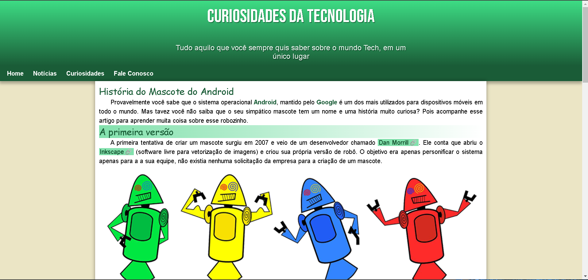

Fracisco Fernandes
Graduando em Tecnologia em Sistemas para Internet
Dev Front-end
Habilidades- HTML5, CSS3 e JavaScript
- Git e Github
- Inglês(Nivel básico)
Hard Skills
- Comunicação interpessoal
- Capacidade analítica
- Proatividade
- Gestão de tempo
- Criatividade
- Trabalho em equipe e cooperação
Soft Skills
Projeto Android
Projeto criado no curso de html e css3 do curso em video do prof. Gustavo Guanabara, com a finalidade de aplicar os conteúdos estudados.
